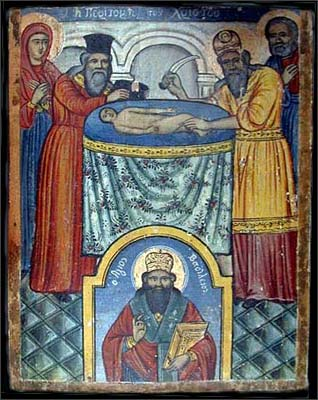

Белояр
Обрезание господне (расследование)
Почти каждый из жителей России знает, что 7 января – великий христианский праздник Рождества Христова. 14 января наступает другой большой и светлый праздник – Крещение Христово. И вот уже не столь большая часть населения, но уже и немалое его количество приноровилось нырять в ледяную прорубь. И не один раз окунаются, а целых три, да ещё с головой, да ещё после освящения воды батюшкой. Религия религией, но если для организма полезно, то на здоровье!
Шутки шутками, но тем не менее есть между этими христианскими праздниками ещё один день, о котором мало кто знает из ныряльщиков в прорубь и из стоящих в очереди за баночкой освящённой крещенской водицы.
Для тех, кто ещё не понял, на что я намекаю, охотно поясню. Речь идёт о великом непереходящем (без плавающей даты празднования) празднике Обрезания Господня. Удивлены? Не знали о таком? Тогда садитесь поудобнее, я начинаю своё небольшое расследование. Если имеется пробел в христианском религиозном образовании относительно этого праздника (проверено), то приходится работать за других, т.е. за тех, в чьи обязанности входит информирование прихожан об этом.
Итак, начнём с информации, предоставленной крупным христианским интернет-ресурсом "Завет.ру"(www.zavet.ru) по поводу заявленной темы:
1 (14) января, великий непереходящий праздник. На восьмой день после Рождества младенец, рожденный Марией, по ветхозаветному обычаю, принял обрезание и получил имя Иисус, возвещенное Архангелом Гавриилом в День Благовещения Пресвятой Деве.
"Православие.ру" (www.pravoslavie.ru) дополняет эту информацию следующим абзацем:
ПРАЗДНИК ОБРЕЗАНИЯ ГОСПОДНЯ. Стихира празднику Обрезания Господня.
Сходяй Спас к роду человеческому, прият пеленами повитие, не возгнушася плотскаго обрезания, осмодневен по Матери, безначальный по Отцу. Тому вернии возопиим: Ты еси Бог наш, помилуй нас.
Стихиры (греч. – многостишие) – песнопение, состоящее из множества стихов, написанных одним размером. Первоначально это ветхозаветные поэтические писания, по образцу которых составлялись затем и христианские стихиры. Соответственно, в день праздника в церкви можно услышать песнопение о плотском обрезании.
Приведенная информация говорит о том, что праздник есть и его наличие не скрывается.
В православном календаре на 14 января выпадает двойной праздник:
14/1 - Обрезание Господне и память святителя Василия Великого. Тропарь. Обрезанию Господню, глас 1.
На Престоле огнезрачнем / в Вышних седяй со Отцем Безначальным и Божественным Твоим Духом. благоволил сей родитися на земли, от Отроковицы Неискусомужныя, Твоея Матере, Иисусе, / сего ради и обрезан был еси, яко Человек осмодневный. / Слава всеблагому Твоему совету, / слава смотрению Твоему, / слава снизхождению Твоему, Едине Человеколюбче.
Величание.
Величаем Тя, / Живодавче Христе, и почитаем пречистыя плоти Твоея / законное обрезание.
Праздник Обрезания Господня продолжается один день и соединяется с празнованием памяти святого Василия Великого, архиепископа Кесарии Каппадокийской, отчего в народе он известен под именем Васильева дня.
Агентство новостей "Страна.ру" 13 января 2001 года поделилось такой информацией:
С праздником Обрезания Господня и с Новым годом по юлианскому календарю, по которому живет Церковь, поздравил сегодня Патриарх Московский и всея Руси Алексий II верующих после совершения всенощного бдения в храме Христа Спасителя. Патриарх пожелал всем, чтобы новый год "был для нашего Отечества временем мирным, созидательным и благословенным, чтобы прекратились всякие войны и противостояния".
Как видите, никакого криминала. Всё честно, законно и без утайки. Теперь обратимся к Ветхому Завету, который является бОльшей частью священной для христиан книги - Библии. Уточняю это по причине того, что некоторые люди называют Библией только Евангелие (Новый Завет), а с содержанием Ветхого Завета вовсе не знакомы, несмотря на то, что в нём изложено много любопытнейших историй, в одной из которых говорится:
Бытие 17:
10 Сей есть завет Мой, который вы должны соблюдать между Мною и между вами и между потомками твоими после тебя [в роды их]: да будет у вас обрезан весь мужеский пол;
11 обрезывайте крайнюю плоть вашу: и сие будет знамением завета между Мною и вами.
12 Восьми дней от рождения да будет обрезан у вас в роды ваши всякий младенец мужеского пола, рожденный в доме и купленный за серебро у какого-нибудь иноплеменника, который не от твоего семени.
13 Непременно да будет обрезан рожденный в доме твоем и купленный за серебро твое, и будет завет Мой на теле вашем заветом вечным.
14 Необрезанный же мужеского пола, который не обрежет крайней плоти своей [в восьмой день], истребится душа та из народа своего, ибо он нарушил завет Мой.
Даже несмотря на прямые указания о празднике в современной бумажной и электронной литературе, продвинутые в вопросах религии христиане могут возразить, что праздник-то есть, но его как бы и нет по причине того, что на смену этому древнему иудейскому обряду пришел праздник Крещения Христова. Действительно, это так:
Обрезание в качестве обряда посвящения Божеству существовало у многих народов, в том числе и у египтян. В еврейском понимании кровь священна, так как "кровь есть душа", кровь, текущая из органа, дающего жизнь, означает посвящение Богу жизни, принятой как дар. У израильтян этот обряд стал знаменовать вступление в союз-завет Авраама и избранного народа с Богом и должен был напоминать народу о вытекающих из этого обязательствах. По толкованию Отцов Церкви Господь, Творец закона, принял обрезание, являя пример, как людям следует неукоснительно соблюдать Божественные установления, и для того, чтобы никто впоследствии не мог усомниться в том, что Он был истинным Человеком, а не носителем призрачной плоти (как учили еретики-докеты). В после пришествия Спасителя обряд обрезания уступил место таинству Крещения. Праздник Обрезания Господня должен напоминать христианам, что они вступили в Новый Завет с Богом и "обрезаны обрезанием нерукотворенным, совлечением греховного тела плоти, обрезанием Христовым" (Кол. 2, 11).
Из приведенного текста видно, что праздник Крещения Господня заменил праздник Обрезания Господня (даты празднования остались различными), однако
"Праздник Обрезания Господня должен напоминать христианам, что они вступили в Новый Завет с Богом и "обрезаны обрезанием нерукотворенным, совлечением греховного тела плоти, обрезанием Христовым".
Новый праздник пришёл, но и про старый забывать грешно. Поэтому, уважаемый читатель, заруби себе на носу (если нет надежды на память, запиши на бумажке): пока не отпраздновал праздник Обрезания Господня, в прорубь даже не думай лезть! Иначе гореть тебе в Аду с другими греховодниками за невнимание к таким знаменательным датам. Про "греховное тело плоти" умолчу. Кто хочет считать своё тело греховным – пусть считает. Дело хозяйское. Можно даже выпороть себя, обвязать веревками или и отрезать от "греховного тела плоти" особо греховные органы. Бывали и такие довольно массовые случаи в истории. Но сейчас не об этом.
19 января 2003 года участник крупнейшего религиозного форума дьякона Андрея Кураева Владимир разместил статью "Кто и зачем обрезал Бога или "Обрезание Господне". Моё желание ознакомится со статьей не получило удовлетворения, т.к. сразу после размещения материала модератор форума удалил тему. Видимо, он заметил в статье козни Лукавого (соблазн познания) и поспешил оградить участников форума от излишнего напряжения в области мозговых извилин. Но я успел зайти на форум как раз в то время, когда настойчивый и недоумевающий Владимир ещё раз заслал статью на форум. Тема была удалена повторно и довольно оперативно. Пользуясь счастливой возможностью, привожу отрывок из этой статьи, где изложена попытка разъяснить тайные причины проведения обряда. В статью я вписал свои комментарии и дополнения. Не вынесла душа поэта…
КТО, КАК И ЗАЧЕМ ОБРЕЗАЛ БОГА или «ОБРЕЗАНИЕ ГОСПОДНЕ»
Член Центрального Совета КПЕ В. И. Тюренков (нейрохирург), г. Сталинград
(отрывок)
Если заглянуть в любой православный церковный календарь, то мы найдём там много праздников, юбилейных и памятных дат. Среди множества праздников церковь выделяет несколько «Великих праздников». К таким «Великим праздникам» относится «Обрезание Господне», праздновать который выпадает на 14 января сего года по новому стилю (1 января по старому стилю), то есть ровно через 8 дней после праздника Рождества Христова, который православные праздновали 7 января. Что же это за «Обрезание Господне», о существе которого многие верующие даже не задумываются? Обратимся к «Евангелию» («евангелие» в переводе на русский язык означает «благая весть») от Луки, так как в трёх других «Евангелиях» (от Матфея, Марка и Иоанна) об «Обрезании Господнем» ничего не благовествуется.
«По прошествии восьми дней, когда надлежало обрезать Младенца, дали Ему имя Иисус, наречённое Ангелом прежде зачатия его во чреве» (Ев. от Луки 2.21).
У думающих людей должны возникнуть вопросы:
— Почему «надлежало обрезать»?;
— Почему «по прошествии восьми дней»?;
— Что «надлежало обрезать»?
Ответы на все эти вопросы мы найдём в Библии, книгах священного писания ветхого и нового завета. В первой книге Моисея «Бытие» находим (далее цитируется по изданию московской патриархии 1990 г., изданного по благословению Святейшего Патриарха Московского и всея Руси АЛЕКСИЯ II):
«17.1 …Господь явился Аврааму и сказал ему: Я Бог Всемогущий; ходи предо Мною будь непорочен;
17.2 и поставлю завет Мой между Мною и тобою, и весьма размножу тебя.
17.4 …ты будешь отцом множества народов…
17.6 …и цари произойдут от тебя…
17.7 …Я буду Богом твоим и потомков твоих…
17.8 … и дам тебе и потомкам твоим … всю землю Ханаанскую во владение вечное…
17.9 …ты же соблюди завет Мой, ты и потомки твои. Сей есть завет Мой.
17.10 Да будет у вас обрезан весь мужеский пол…
17.11 обрезывайте крайнюю плоть вашу; и сие будет знамением завета между Мною и вами.
17.12 Восьми дней от рождения да будет обрезан у вас в роды ваши всякий младенец мужского пола, рождённый в доме и купленный за серебро у какого-нибудь иноплеменника, который не от твоего семени.
17.13 …и будет завет Мой на теле вашем заветом вечным.
17.14 Необрезанный же мужеского пола, который не обрежет крайней плоти своей [в восьмой день] истребится душа та из народа своего, ибо он нарушил завет Мой».
Вот оно что! Вот, оказывается, что надо «обрезать» и «почему»! Ничего себе праздничек!
Не могу не вмешаться от удивления. Что это за чудовище такое, которое требует от своего народа исполнение столь зверского обряда? Неужели нельзя потребовать демонстрации верность себе-любимому другими, более гуманными методами? Например, наколку маленькую сделать ("не забуду Бога родного") или ещё что… По поводу самого обряда аналогии мне на ум приходят не очень радостные. Представители африканских, австралийских и островных племён до настоящего времени практикуют издевательства над своим телом в виде оттягивания нижней губы, вытягивания шеи, прокалывания некоторых частей тела, деформации черепа и т.п. Как рассказывают телевизионные путешественники, делается это для красоты, представления о которой у аборигенов весьма своеобразные. Но я не слышал, чтобы такие зверства являлись непременным требованием местных богов как непрекословный знак верности. Более того, эти изощрённые племенные обряды вовсе не претендуют на основы религии, публично заявляющей о своей высокой духовности и благородной миссии. Калечат себя потихоньку, ну и на здоровье! Но в нашем случае нестыковка получается. Цели декларируются высокие, а для подкрепления действенности используется совсем уж неприличная для цивилизованного человека процедура. На самом деле, не мне судить. Раз их бог приказал, пусть отрезают что хотят. Партия сказала – "надо!", комсомол ответил - "есть!" И никаких "но" и "если". Продолжаем читать статью.
Люди по-разному реагируют на такое открытие для себя. Одни отмахиваются рукой, не задумываясь, говорят: «Ну и пусть! Это их дело! Пусть что хотят, то и обрезают! Мне-то что от этого…» Другие обосновывают это «гигиенической процедурой». Верно, но как я говорил выше, некоторые вообще не подозревают о таком празднике. Однако те люди, которые захотят разобраться в этом вопросе, откроют для себя удивительные вещи.
Весьма затруднительно говорить о количестве таких людей, если им даже не дают почитать изложенное. Надеюсь, что их много, но они пока не догадываются об этом.
Так «Евангелие» от Фомы (а его, как, впрочем, и другие апокрифы, скрывают от большинства людей), апокриф из рукописей Наг-Хаммади, относимый к гностицизму, сообщает о вопросе, заданном Христу: «58. Ученики его сказали ему: Обрезание полезно или нет? Он сказал им: Если бы оно было полезно, их отец зачал бы их в матери обрезанными. Но истинное обрезание в духе обнаружило полную пользу» (Цитировано по «Апокрифы древних христиан», Москва, «Мысль», 1989г., стр.256). Очевидно, что комментировать это нет смысла.
Действительно, вполне здравая мысль изложена в апокрифе. Только вот в чём проблема: апокрифы официально объявлены ересью, притом давно. Поэтому приводить цитаты из них в качестве доказательства своей правоты христианину никак нельзя. Грех это.
Те, кто знаком с восточными учениями о чакрах (энергоинформационных центрах человеческого организма), утверждают, что чакры вступают в действие в определённой последовательности в течение первых двух недель после рождения ребенка (странное доказательство христианской правоты с помощью обращения к ведическому учению о чакрах). Обрезание на восьмой день, по их утверждению, нарушает вступление в деятельность сердечной и более высоких чакр в теле человека, которые отвечают (по этим восточным учениям) за любовь и высшую духовную и интеллектуальную деятельность. Обрезание в более позднем возрасте, как в историческом исламе, всё равно нарушает информационный фон работы головного мозга, поскольку определённая часть его многофункциональных зон оказывается забитой обработкой информации, поступающей с постоянно открытой (что противоестественно) головки полового члена: то есть разум подавляется сексуально-инстинктивной информацией. Кстати, в Коране вы не найдете рекомендаций по «обрезанию крайней плоти». Напротив, в Коране есть стихи, которые можно понимать, как неугодность обрезания. Например, сура 4: «117… они призывают только сатану, отступника. 118. Проклял его Аллах. И сказал он (сатана): «Я непременно захвачу от Твоих рабов долю назначенную, и собью их с пути (…) и прикажу им, и пусть они будут изменять творение Аллаха!» Кто берёт сатану заступником помимо Аллаха, тот потерпел явный убыток!» (перевод Крачковского).
Комментарии излишни.
«Это всё древности, писания какие-то, учения всякие восточные… Несерьёзно!» — скажут некоторые, «А в чём суть-то? Как это выглядит с позиции современных знаний?»
Как известно, мозг человека состоит из двух полушарий: правого и левого. Правое отвечает за процессно-образное мышление, левое - за абстрактно-логическое. И есть у человека сознание и подсознание. В подсознании хранится вся генетически наследуемая и поступающая в процессе жизни человека информация. Подсознание — это как кладовая, склад. Сознание обрабатывает поступающую человеку информацию из «вне» и из «себя самого» от рецепторов (зрение, слух, обоняние, осязание, вкус). Сознание обрабатывает всё это, доставая при этом что нужно из подсознания (со склада, из кладовой), а, обработав — складирует результаты в подсознание (на склад).
Всё это: правое полушарие, левое полушарие, сознание, подсознание — работают не «как попало», а в определённой последовательности. Эта «последовательность» действий по-научному называется «алгоритмом».
Этот алгоритм у человека появляется не сразу. Он строится (вырабатывается) на базе наследственности (генетики) человека, а также под воздействием окружающей среды. И формирование (выработка) этого алгоритма идёт по строго определённой генетической программе, заложенной в каждом человеке. И очень важен самый начальный момент формирования этого алгоритма, самое начало отработки этой генетической программы.
Родился человечек. Он начинает воспринимать окружающий мир: шорохи, звуки, вкус материнского молока, лучи солнца… Все это естественно, это всё есть в реальной жизни. И алгоритм начинает формироваться правильно, а генетическая программа отрабатывается естественным образом…
Но в этот момент маленькому человечку наносят удар в одно из самых чувствительных мест. БОЛЬНО!!! И мозг такого человечка на определённое время «думает» только об этой боли, «зацикливается» на ней, и … перестаёт правильно воспринимать окружающий мир, перестаёт отрабатывать естественную генетическую программу по формированию правильного алгоритма работы головного мозга. То есть «обрезание» приводит к искажению алгоритма работы головного мозга человека. В терминологии КОБ это означает — искажение меры человека.
Чтобы образно понять действие этого механизма «обрезания», представьте себе каменщика, который выкладывает некую кирпичную стену. В самом начале своей работы он допустил маленькую, малюсенькую ошибку (брак): фундамент из бетона он сделал чуть-чуть криво, с наклоном. Потом, выкладывая стену из кирпичей, стена всё больше будет наклоняться, брак станет очевидным, а стена может рухнуть. Но если стену можно сломать и переделать, то с человеком так не получится…
Искажение алгоритма работы головного мозга человека отражается и на генетике самого человека, а при воспроизводстве поколений таких «обрезанных» - ошибка в генетике всё более возрастает, что также приводит к своеобразному «обрушению стены».
Далее автор статьи пытается доказать, что христианский бог не мог придумать такую злую шутку - обрезание, и тем более рекомендовать её людям. Кроме того, автор статьи утверждает, что и Иисус не мог быть подвергнут процедуре обрезания, тем самым, опровергая правдивость биографии Иисуса Христа, которая изложена в священном писании. Всё доказательство строится по принципу "этого не могло быть, потому что не могло быть никогда!". В качестве доказательства правоты своей теории о том, что Христос не был обрезан, автор не скупится на эмоции: "Да, Иисус Христос получил откровения от Бога! Но та древняя мафия сумела отредактировать их, подстроить их под свои интересы".
Теория вселенского антихристианского заговора с искажением текста первоисточника поддерживаемая автором статьи бытует среди некоторых православных патриотов радикального толка. Когда их прижимают к стене доказательствами того, что бог, описанный в Библии, является не кем иным, как "Богом Израилевым" (о чём в Библии написано неоднократно и открытым текстом), они начинают разговоры именно об этом. На просьбу предъявить неискаженные тексты священных писаний отвечают гордым молчанием, прикидываются глухими и слепыми или утверждают, что истинные первоисточники хранят в подвалах Ватикана зловредные римские Папы-анртихристы и никому не показывают. Я это уже слышал это и не раз, поэтому не стану допекать читателей дальнейшими фрагментами статьи, тем более, что самое интересное и большее из неё Вы уже прочитали. Для желающих ознакомиться со всей статьёй, даю ссылку на сайт, где она выложена в полном объеме: http://old.kpe.ru/rating/analytics/religion/206/
С какой целью я собрал всю эту информацию?
Если Вы подумали, что я решил поиздеваться над христианством и людьми, его исповедующими, то ошибаетесь. На самом деле всё проще и прозаичнее.
Мне кажется, что, становясь приверженцем какой-либо религии, человек должен знать о ней всё или хотя бы основополагающие моменты, изложенные в священных писаниях и декларируемые руководством религиозной организации.
Не менее важным является знание биографии первоучителя (основателя), его слов и поступков. Непременным условием существования просвещённого адепта является знание обрядов, которые были совершены над основателем учения и которые совершал он, дабы доказать свою божественную сущность. В противном случае, человек становится либо недостаточно информированным о своей Вере (при получении неполной или искаженной информации), либо подлецом (в случае ознакомления и умалчивании о неудобных для него событиях, фрагментах биографии или обрядов).
В современном мире на самостоятельное изучение громоздких и тяжело перевариваемых в голове священных писаний у простого человека не хватает желания, терпения или ума. При всём при этом трактовкой (пережевыванием материала для наилучшего и "верного" понимания) первоисточников занимается громадная масса "авторитетов" от церкви, но только не разум этого самого человека.
Пусть же эта небольшая подборка цитат с комментариями об одном из христианских праздников станет скромным пособием для наилучшего усвоения сущности религии, которую многие считают своей, зачастую так мало уделяя внимания "мелочам", из которых как раз и состоит целое…
29 января 2003 г.
Также см. И.И. Сапиров, "ОБРЕЗАHИЕ В ВЕТХОМ И HОВОМ ЗАВЕТАХ".